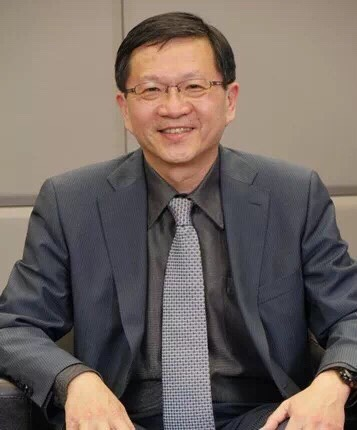

理事長的話
- Words from the Chairperson -
創立本會的發想源自 2016 年，當時與利院長和包教授到柬埔寨的金邊參觀和訪問。
The idea of creating APCMGU (Asia Pacific Chinese Medical Global Union) was originated since 2016, when Dr. Yi-Chia Li (Director of Joy Dental Clinic), Professor Da-Tian Bau (Chairman of Terry Fox Cancer Research Lab, China Medical University Hospital) and I visited Phenom Penh, Cambodia.
印象所及,先到柬埔寨「微笑協會」，了解到世界上在不同的角落總是會有一群需要互相協助的人。
To my impression, we first visited Smile Cambodia (Led by Dr. Theavy Mok since 2002, is committed to providing surgeries to patients in need as well as providing educational opportunities for Cambodian doctors and nurses.) and realized that there are always numerous of people who are desperately in needs of mutual help at every corner of the world.
例如幫助「微笑協會」小朋友的人來自美國丶瑞士，甚至我們也看到來自蘇俄的醫生。另外在學校或醫院的醫學交流演講會上，總是見到熱情接待的人們，他們的燦爛笑容和對新知的渴望深深地觸動我們深層的心靈，讓我們覺得我們應該可以多做一些什麼來互相了解信任，並且確實能夠互相有所幫助，福報資糧分享共享，實踐「世界地球村」，不再是遙不可及的夢想 (理想)。
even from Russia who are helping the kids in Smile Cambodia. Moreover, we could always see the passionate receptionists during the medical academic exchange conferences no matter in the school or in the hospital. Their splendid smiles and desire for new knowledge deeply touched our hearts. We heartily felt that we should do something more not only to understand and trust each other, but truly help one another! Mutually share the blessing and resources to make the dream of “Global Village” to come true in near future.
2017 年在利院長的奔走以及許多有共同信念的同道支持下本會終於正式成立。宗旨基於人之善念以及互助丶互愛精神，希望能幫助需要我們幫助的人，而我們的第一站就是柬埔寨。
Under the tireless efforts of Dr. Li and numerous volunteers of doctors and medical personnel who shared the identical faith, APCMGU (Asia Pacific Chinese Medical Global Union) was eventually established in 2017. The main purpose of APCMGU is to offer our helping hands toward those who are in need based on the goodwill and the spirit of humanity to help and love one another. Cambodia is our first stop.
創會一年多來我們與柬國友人已有多次的互訪，本會志工也多次到柬國義診，每次的活動由於都立基於友誼與互助所以結果都是完美的。
More than one year since APCMGU founded, there had been several mutual visits between APCMGU and good friends from Cambodia. In the meantime, many of our volunteers also visited Cambodia to offer several free medical services in rural areas. All above activities were achieved perfectly based on mutual solid friendship and mutual assistance.
本會之創立實為因緣所生，希望以此因緣廣徴更多的同道，讓我們在世界的一個小角落發光發熱，幫助天涯海角任一方弱勢的朋友們，讓世界因為您的熱心參與、分享共享,而更加美好。
To sum up, the rise of APCMGU is credited to the right time, right people and right conditions. By taking such a golden opportunity, may we sincerely invite more outstanding talented volunteers of the same ideal like you to emit our heart-lights and passions altogether to help those vulnerable friends in every tiny corner of the world. And because of your cordial participation and sharing, this world will surely be even better than ever!
祝大家健康快樂丶幸福平安。
May all be healthy, happy, blissful and peaceful.
理事長 夏德椿醫師
Chairperson, Dr. HSIA, Te-Chun
中國醫藥大學呼吸治療學系主任
Chair, Department of Respiratory Therapy, China Medical University
中國醫藥大學附設醫院內科部副主任
Vice Chair, Department of Internal Medicine, China Medical University Hospital
中國醫藥大學附設醫院重症醫學中心主任
Director, Intensive Medicine Center, China Medical University Hospital